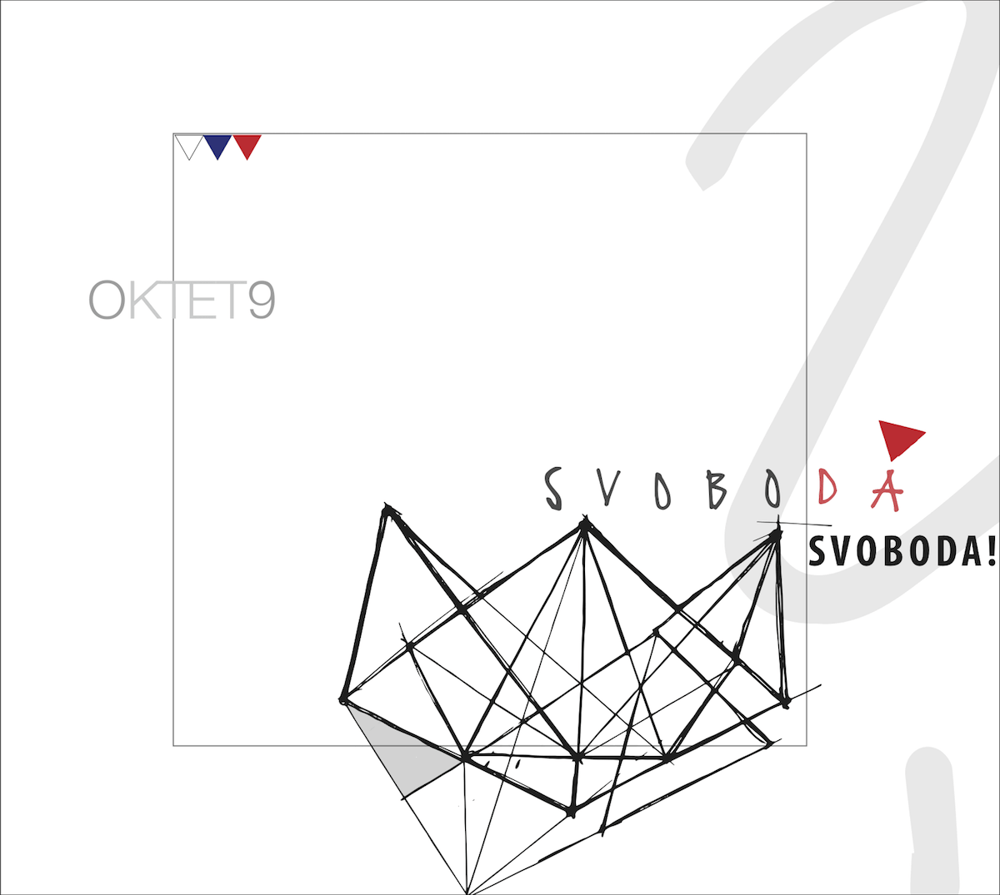
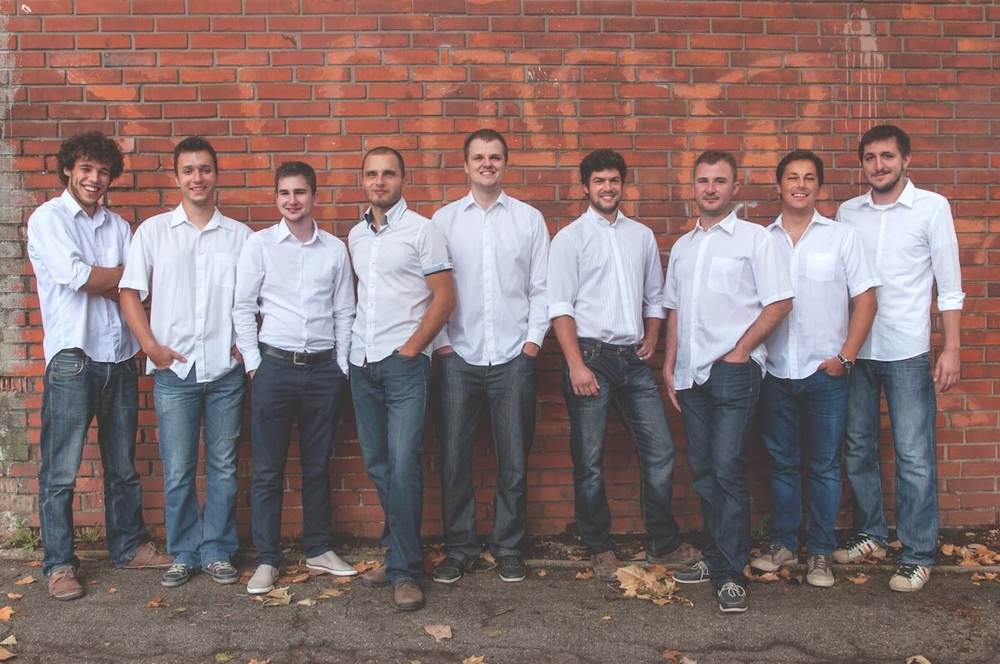

Svoboda!?
Svoboda je šopek skladb, sestavljen kot svarilo in zdravilo pred zgodovinsko pozabljivostjo. V njem najdemo cvetove iz kmečkih uporov, Ilirskega kraljestva, Avstrijskega cesarstva ter z bojišč obeh svetovnih vojn. Nabrali smo jih tam, kjer so naši predniki iskali svobodo, jih zalili s svežo vodo in povezali s trakom mladosti.
Po dveh izdajah, ki sta bili zgolj malce uradnejša posnetka koncertov, smo leta 2015 prvič posneli pravo zgoščenko. Najprej smo nekaj mesecev spoznavali izbrani material na vajah, nato pa pet napornih snemalnih dni preživeli v prijetni akustiki stare športne dvorane Gimnazije Celje-Center.
Album Svoboda lahko v fizični obliki dobite tako, da nas pocukate za rokav po katerem od naših nastopov ali nam zatežite po elektronski pošti, na voljo pa je tudi v digitalni obliki.
Nastopi
Večina nastopov v prihajajočih nekaj mesecih bo osredotočena na naš letošnji jubilej, tako da lahko pričakujete repertoar, ki bo povzemal preteklo desetletje delovanja okteta, tu in tam osvežen s kakšnim še neslišanim komadom.
- 26. 5. ob 19. uri bomo v Narodnem domu priredili Oktet 9 Deset, kot smo letos poimenovali svoj tradicionalni letni koncert. Ker smo dopolnili 10 skupnih let, bo osrednja tematika nostalgiziranje ob spominih na najpomembnejše izkušnje in pesmi.
- 16. 7. ob 18. uri nas boste lahko videli v Laškem, kamor so nas povabili organizatorji festivala Pivo in cvetje.
Najnovejše informacije o prihajajočih nastopih lahko vedno najdete na naši Facebook strani.
Kontakt
Če bi nas radi najeli za nastop, pokličite 041 708 945 (Gregor) ali 040 453 789 (Jan). Kadarkoli nam lahko tudi pošljete e-mail ali pustite sporočilo na Facebook strani.
